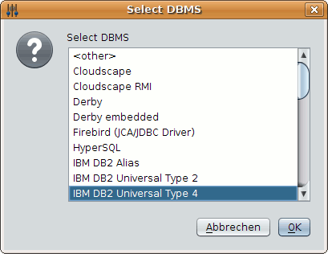
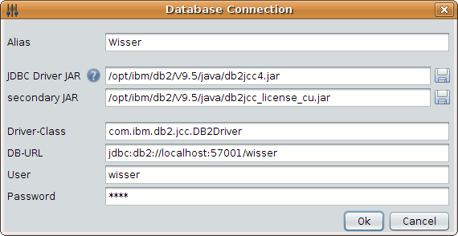
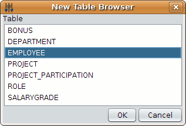
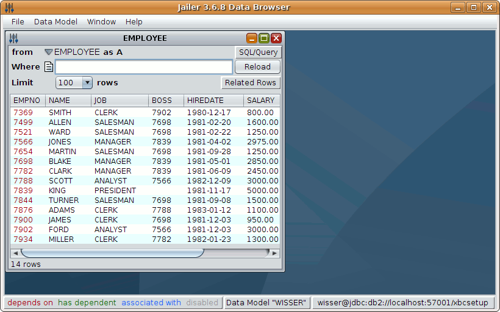
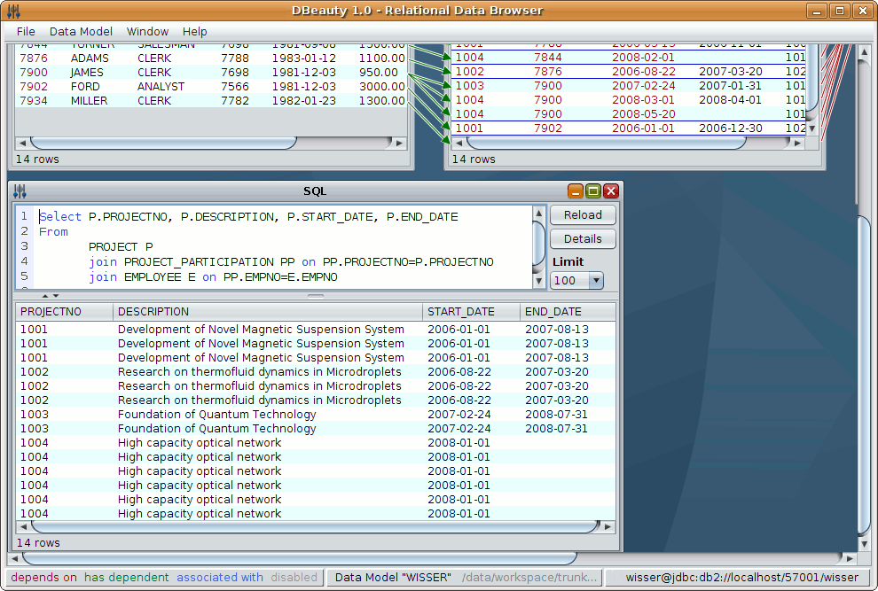
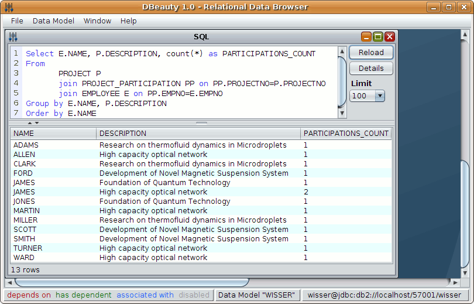

Relational
Data Browsing
1. Connect to the Database
Start the Data Browser (JailerDataBrowser.exe
or jailerDataBrowser.bat
on windows platform)
The first time you start the Databrowser you will be asked for the
database connection information.

Select the DBMS you are using from the displayed
list, and fill out the following form:

Finally click on "Connect".
1. Analyze the Database
The first time you use the Databrowser you will be
asked for a Data Model.

A data model holds information about the tables in
the database and all
associations between them.
Most of the information can be retrieved automatically by analyzing
the database schema.
Click on Analyze Database

Select the schema you want to analyze and click on OK.
Jailer finds seven tables and five associations:

Two associations are still missing:
- an employee is classified into a
salary grade depending on his salary
- employees may receive bonuses
Add the definitions manually (Add-Button
under Associations):


3. Browse a Table
Select the menu item "New Table Browser" from "File" and choose
"EMPLOYEE" as the table you want to browse:

A Table Browser appears showing the rows
of table EMPLOYEE.

3. Browse related Rows
Select the "Children" item from the "Related Rows" drop-down menu and
choose "EMPLOYEE on inverse-BOSS".

Another Table Browser appears showing the subordinates of each Employee
(the inverse of the "BOSS" relationship)

3. Generate SQL-Query
Within each table browser, a SQL-Query can be generated which selects
exactly the browser's content.
Essentially it's a join of all the tables in the navigation
chain.
Close the second "EMPLOYEE" browser, navigate from
EMPLOYEE to PROJECT_PARTICIPATION, and from there to PROJECT.
Choose "Query
Builder" item from the "SQL/Query" menu in
the "PROJECT" browser:

The Query Builder form lets you save the query
into a file, copy it to the clipboard or even execute it.
Choose "Execute" to get a query-result browser:

Within this query-result browser, you can edit the
query anyway you want.

|